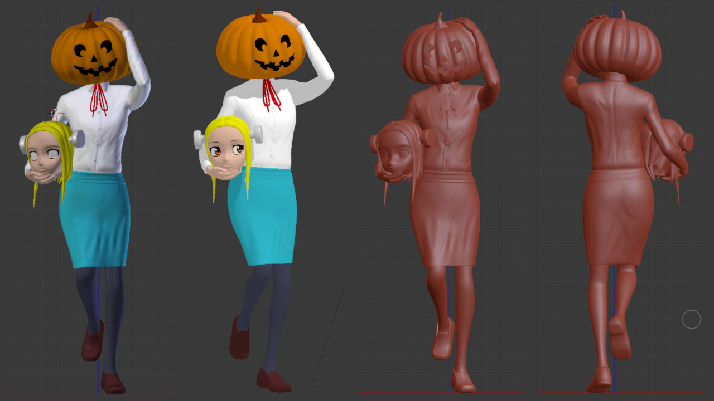

Back to works listing
Halloween Fran Madaraki
Fran sometimes loses her head, this time was on Halloween, who did this prank?

Fig. 1 - Solid/Shaded and Matcap views in Blender 2.79.
Fig. 2 - Printed and painted model.